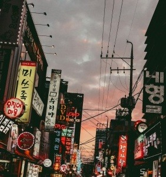
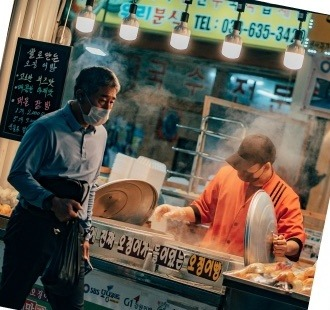

Знімаємо кліпДорами і K-pop
Знімаємо власний K-pop кліп у HiKR Ground, заходимо в KWANGYA від SM і гуляємо Гангнамом.
왜 한국Чому Корея
Палаци XIV століття тут стоять поруч із хмарочосами, а вулична їжа — частина програми.

Знімаємо кліпЗнімаємо власний K-pop кліп у HiKR Ground, заходимо в KWANGYA від SM і гуляємо Гангнамом.
Фотосесія в ханбоках біля палацу Gyeongbokgung, Bukchon Hanok Village і Кенджу — столиця королівства Сілла.
 100-й поверх
100-й поверхБібліотека Starfield у COEX, 100-й поверх Busan X the Sky і цифрові зали ARTE Museum.

Стріт-фудK-BBQ, ттокпоккі, пунгеппан і десерти з матча. Канцелярія, косметика і K-pop альбоми.